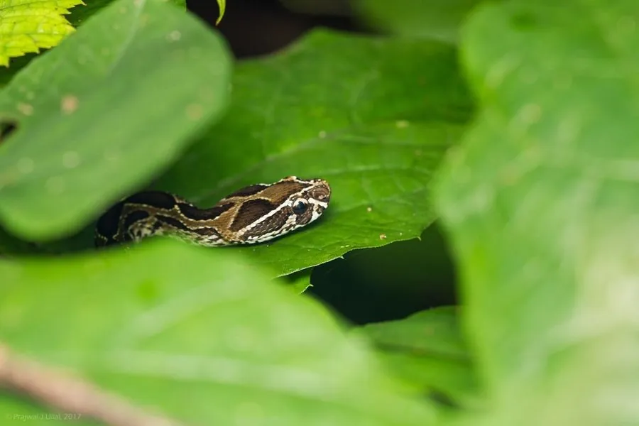

爬行动物 · 动物界
圆斑蝰 Daboia russelii

南亚与东南亚常见的剧毒蝰蛇，背部有三行圆形斑点，毒液可致出血和肾损伤，被咬后须尽快就医并使用血清。
- 分类
- 门脊索动物门纲爬行纲目有鳞目科蝰科属圆斑蝰属
- 栖息环境
- 农田、草地、灌丛、林缘与村落附近的潮湿环境
- 地理分布
- 南亚、东南亚部分地区及中国南方少数地区
- 保护级别
- IUCN 无危（LC）；中国国家二级保护动物
物种志
圆斑蝰体长 1–1.5 米，身体较粗壮，头部呈三角形且与颈部区分明显，体色从黄褐、灰褐到红褐色不等，背部有三行纵向排列的大圆形斑块，每个斑块中央颜色较浅、边缘镶黑框，腹面淡黄并带有黑色小斑。它行动较慢，受惊时会盘成“S”形并发出响亮的嘶声。
它分布于印度、巴基斯坦、斯里兰卡、孟加拉国及东南亚部分地区，栖息于农田、草地、灌丛和村落附近，多在夜间活动，捕食鼠类、蛙类、鸟类和蜥蜴。它是卵胎生蛇类，妊娠约 6 个月后产下 20–40 条幼蛇。圆斑蝰毒性较强，毒液主要破坏血液凝固功能并损伤肾脏，被咬后须尽快使用抗蛇毒血清；它在中国南方有少量分布，已被列为国家二级保护动物。
形态与习性
- 食性鼠类、蛙类、鸟类和蜥蜴
- 体长1–1.5 m
- 体重约 1–2 kg
- 寿命约 15–20 年
- 繁殖卵胎生，妊娠约 6 个月，每胎 20–40 条
- 活动节律夜行性，受惊时发出响亮嘶声
- 毒性出血毒素为主，被咬须立即就医
趣味知识
- 圆斑蝰背部有三行圆形大斑块，民间因此称它“百步金钱豹”。
- 它的毒液会破坏血液凝固功能，还可导致急性肾损伤。
- 圆斑蝰在中国南方分布较少，已被列为国家二级保护动物。